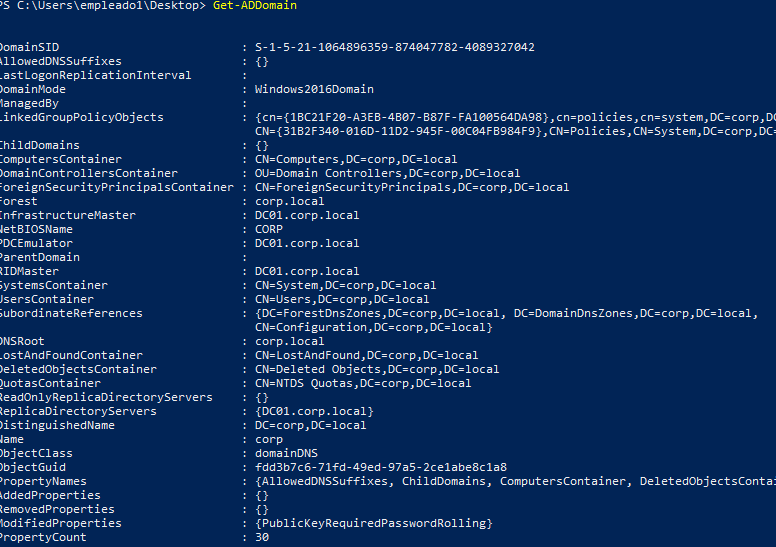
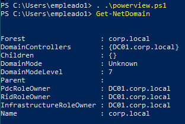

El motivo de esto es que en el servidor domain controller podemos hacer uso de comandos como:
Get-ADDomain
Para listar la información del controlador del dominio debido a que este windows server tiene una librería especifica para ello por lo que si intentamos ejecutar este comando en un sistema windows sin esta libreria dirá que no existe tal expresión.
Para esto cogeremos la dll del windows server y la copiaremos a nuestra maquina.
C:\Windows\Microsoft.NET\assembly\GAC_64\Microsoft.ActiveDirectory.Management\v4.0_10.0.0.0__31bf3856ad364e35
En esa dirección podremos encontrar el archivo dll con la configuración y librerías llamado : Microsoft.ActiveDirectory.Management.dll
Lo pasamos a la maquina WS01 y lo importamos
Import-Module .\Microsoft.ActiveDirectory.Management.dll
De esta manera podremos listar datos del dominio desde la maquina:

Una cosa a tener en cuenta es que el protocolo utilizado para recibir la información son paquetes TCP y no DCE/RPC, es decir que estamos haciendo querys al controlador de dominio.
Sin embargo si volvemos a las WS01 donde teníamos nuestro powerview y hacemos esto mismo podremos ver:

Que nos devuelve información pero esta vez en Wireshark veremos que el protocolo utilizado es LDAP lo que significa que se está comunicando directamente con la interfaz de data controller con ese protocolo.